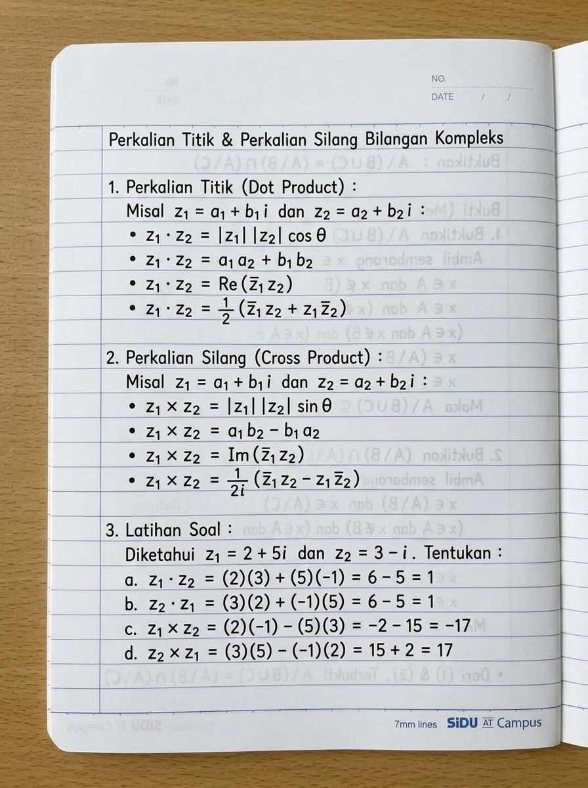
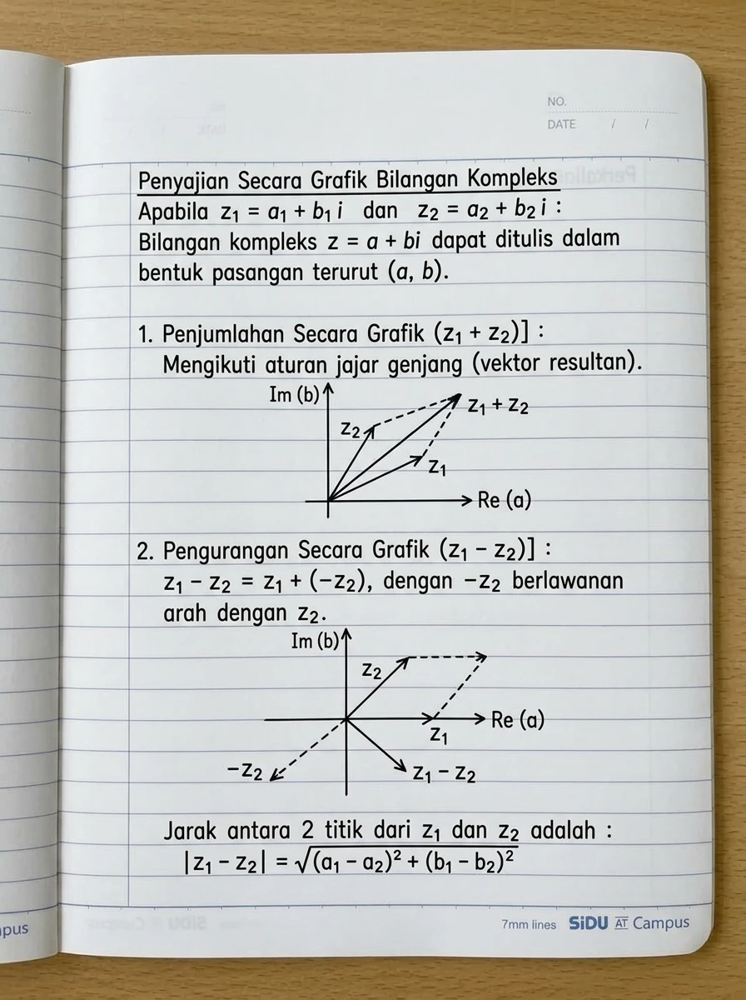
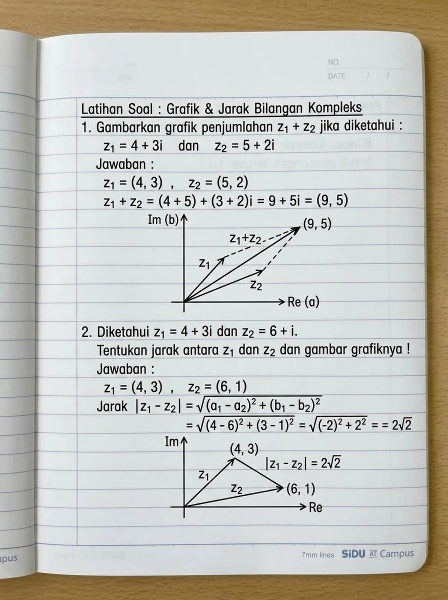
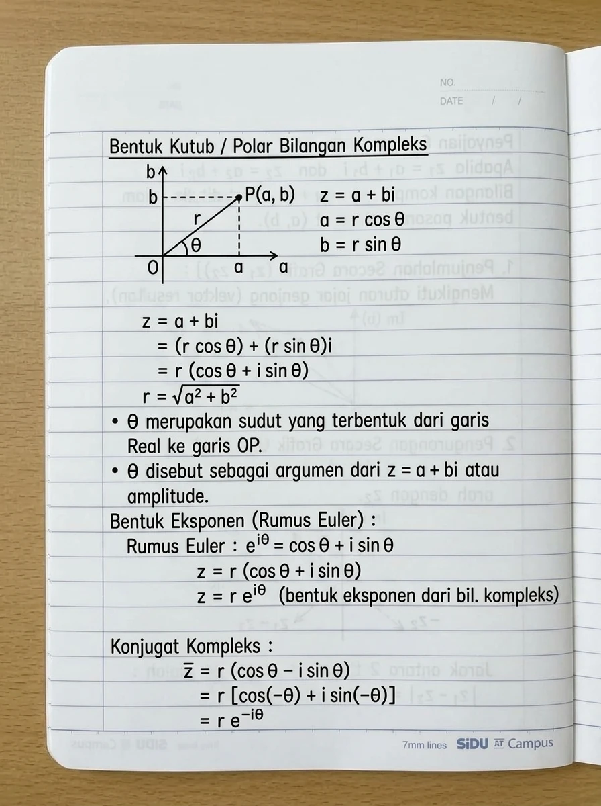
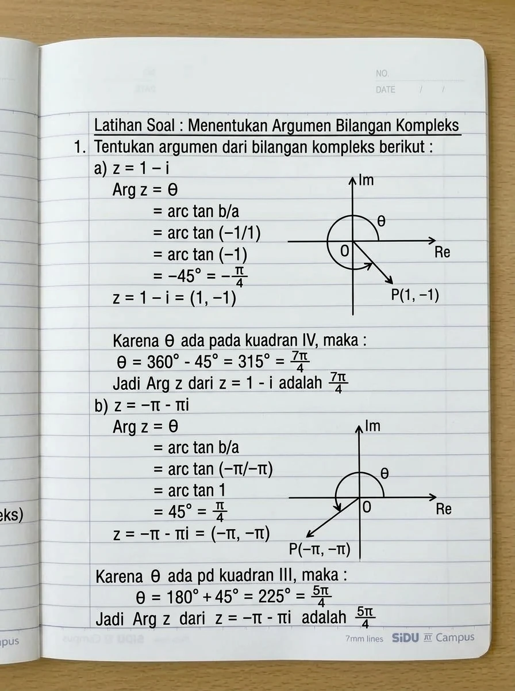
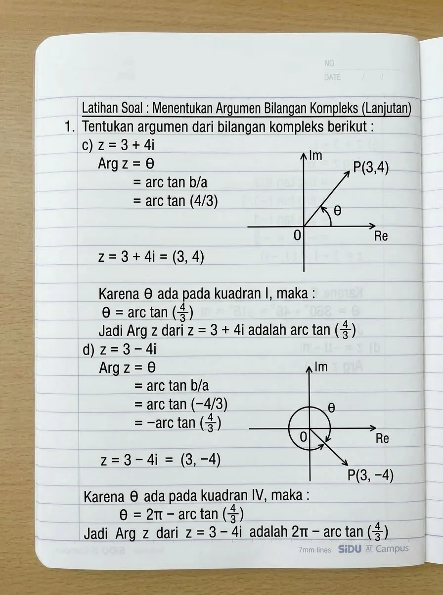
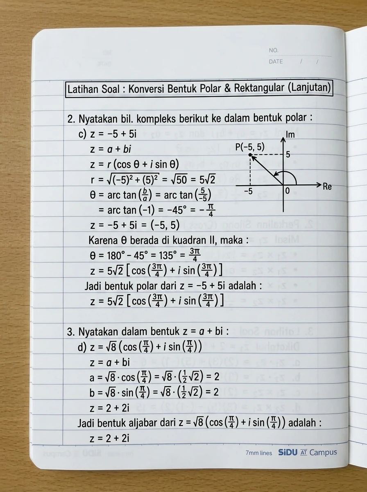

1. Perkalian Titik Bilangan Kompleks (Dot Product)
Diberikan dua buah bilangan kompleks: \[z_1 = a_1 + b_1 i \quad \text{dan} \quad z_2 = a_2 + b_2 i\] Perkalian titik (*dot product*) dinotasikan dengan \(z_1 \cdot z_2\) dan memiliki empat bentuk representasi yang setara:
Keterangan: \(\theta\) adalah besar sudut antara vektor posisi \(z_1\) dan \(z_2\). Perkalian titik menghasilkan skalar bilangan real murni.
2. Perkalian Silang Bilangan Kompleks (Cross Product)
Perkalian silang (*cross product*) dua bilangan kompleks dinotasikan dengan \(z_1 \times z_2\) dan memiliki empat representasi ekuivalen:
Soal: Diketahui \(z_1 = 2 + 5i\) dan \(z_2 = 3 - i\). Tentukan:
- \(z_1 \cdot z_2\)
- \(z_2 \cdot z_1\)
- \(z_1 \times z_2\)
- \(z_2 \times z_1\)
Penyelesaian:
Identifikasi komponen: \(a_1 = 2, b_1 = 5\) dan \(a_2 = 3, b_2 = -1\).
3. Penyajian Secara Grafik Bilangan Kompleks (Bidang Argand)
Setiap bilangan kompleks \(z = a + bi\) dapat dituliskan dalam bentuk pasangan terurut \((a, b)\) pada bidang koordinat datar:
• Sumbu horizontal dinamai Sumbu Real (\(\text{Re}\) atau \(a\)).
• Sumbu vertikal dinamai Sumbu Imajiner (\(\text{Im}\) atau \(b\)).
- Penjumlahan Secara Grafik (\(z_1 + z_2\)): Mengikuti aturan jajar genjang (*parallelogram law*). Vektor resultan \(z_1 + z_2\) ditarik dari titik asal \((0,0)\) ke titik puncak diagonal berkoordinat \((a_1 + a_2, b_1 + b_2)\).
- Pengurangan Secara Grafik (\(z_1 - z_2\)): Didefinisikan sebagai penjumlahan dengan lawan vektor: \(z_1 - z_2 = z_1 + (-z_2)\), dengan \(-z_2 = -a_2 - b_2 i\) berlawanan arah \(180^\circ\) terhadap \(z_2\).
- Jarak Antara Dua Titik Kompleks: Panjang jarak euclides dari titik \(z_1\) ke titik \(z_2\) adalah modulus selisihnya: \[\mathbf{|z_1 - z_2| = \sqrt{(a_1 - a_2)^2 + (b_1 - b_2)^2}}\]
Soal 1: Gambarkan grafik penjumlahan \(z_1 + z_2\) jika diketahui \(z_1 = 4 + 3i\) dan \(z_2 = 5 + 2i\)!
Penyelesaian:
Gambar 1: Aturan Jajar Genjang untuk Penjumlahan \(z_1 + z_2 = 9 + 5i\).
Soal 2: Diketahui \(z_1 = 4 + 3i\) dan \(z_2 = 6 + i\). Tentukan jarak antara \(z_1\) dan \(z_2\) beserta gambar grafiknya!
Penyelesaian:
Gambar 2: Jarak Euclidean Antara Dua Titik Kompleks adalah Panjang Ruas Garis Merah (\(2\sqrt{2}\)).
4. Pendalaman Geometri Modulus: Persamaan Lingkaran
Karena \(|z - z_0|\) menyatakan jarak dari sembarang titik \(z\) ke titik tetap \(z_0\), maka himpunan semua titik yang berjarak konstan \(r\) terhadap \(z_0\) membentuk lingkaran:
• \(|z - z_0| = r\): Keliling lingkaran (kurva batas).
• \(|z - z_0| < r\): Cakram dalam terbuka (*open disk*).
• \(|z - z_0| > r\): Daerah luar (*exterior*).
5. Bentuk Kutub (Polar Form) & Rumus Euler
Dengan memandang titik \(P(a, b)\) pada bidang kompleks berjarak \(r = |z| = \sqrt{a^2 + b^2}\) dari titik asal dan membentuk sudut \(\theta\) terhadap sumbu Real positif, diperoleh hubungan trigonometri segitiga siku-siku: \[a = r \cos \theta \qquad b = r \sin \theta\]
\(\theta\) disebut sebagai argumen dari \(z\) atau amplitude (\(\theta = \arg(z)\)).
6. Alur 4 Tahap Menentukan Argumen (Sesuai Dosen)
Di kelas, Ibu Vepi menggunakan alur 4 tahap terstruktur untuk menentukan argumen sudut pada rentang \([0, 360^\circ)\) atau \([0, 2\pi)\):
- Tahap 1: Hitung sudut acuan \(\theta_{acuan} = \arctan\left(\frac{b}{a}\right)\).
- Tahap 2: Tuliskan koordinat pasangan terurut \(P(a, b)\) dan tentukan letak kuadrannya.
- Tahap 3: Sesuaikan sudut berdasarkan aturan kuadran:
• Kuadran I: \(\theta = \alpha\)
• Kuadran II: \(\theta = 180^\circ - \alpha\) (atau \(\pi - \alpha\))
• Kuadran III: \(\theta = 180^\circ + \alpha\) (atau \(\pi + \alpha\))
• Kuadran IV: \(\theta = 360^\circ - \alpha\) (atau \(2\pi - \alpha\)) - Tahap 4: Tuliskan kesimpulan dalam bentuk pecahan \(\pi\) eksak (bukan desimal)!
a. Menentukan Argumen dari \(z = 1 - i\):
Jadi, Argumen dari \(z = 1 - i\) adalah \(\mathbf{\frac{7\pi}{4}}\) (atau \(315^\circ\)).
b. Menentukan Argumen dari \(z = -\pi - \pi i\):
Jadi, Argumen dari \(z = -\pi - \pi i\) adalah \(\mathbf{\frac{5\pi}{4}}\) (atau \(225^\circ\)).
c. Menentukan Argumen dari \(z = 3 + 4i\):
d. Menentukan Argumen dari \(z = 3 - 4i\):
7. Konversi Bentuk Polar & Rektangular
Soal 2c: Nyatakan \(z = -5 + 5i\) ke dalam bentuk polar!
- Hitung modulus eksak: \[r = \sqrt{(-5)^2 + 5^2} = \sqrt{25 + 25} = \sqrt{50} = \mathbf{5\sqrt{2}}\]
- Hitung sudut acuan: \[\theta = \arctan(5 / -5) = \arctan(-1) = -45^\circ = -\frac{\pi}{4}\]
- Identifikasi kuadran: \(z = (-5, 5)\) berada di Kuadran II. \[\theta = 180^\circ - 45^\circ = 135^\circ = \mathbf{\frac{3\pi}{4}}\]
- Susun ke bentuk polar: \[\mathbf{z = 5\sqrt{2}\left[\cos\left(\frac{3\pi}{4}\right) + i\sin\left(\frac{3\pi}{4}\right)\right]}\]
Soal 3d: Nyatakan dalam bentuk aljabar \(z = a + bi\) dari \(z = \sqrt{8}\left(\cos\frac{\pi}{4} + i\sin\frac{\pi}{4}\right)\)!
- Bentuk umum: \(z = a + bi\).
- Komponen real: \[a = r\cos\theta = \sqrt{8}\cos\left(\frac{\pi}{4}\right) = \sqrt{8}\left(\frac{1}{2}\sqrt{2}\right) = \frac{1}{2}\sqrt{16} = \frac{1}{2}(4) = \mathbf{2}\]
- Komponen imajiner: \[b = r\sin\theta = \sqrt{8}\sin\left(\frac{\pi}{4}\right) = \sqrt{8}\left(\frac{1}{2}\sqrt{2}\right) = \frac{1}{2}\sqrt{16} = \frac{1}{2}(4) = \mathbf{2}\]
- Susun hasil akhir: \[\mathbf{z = 2 + 2i}\]
8. Dokumentasi Catatan Tulis Tangan Asli (7 Lembar Buku SiDU)
Berikut adalah arsip digital dari 7 lembar catatan perkuliahan asli Pertemuan 05 yang tersimpan di buku catatan:






